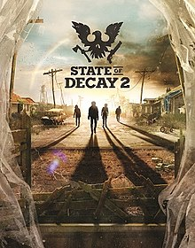

ABOUT THIS GAME
How Will You Survive? The dead have risen and civilization has fallen. Not even the military could stop the zombies, and now it's up to you to gather survivors and build a community in a post-apocalyptic world – a world where every decision matters, and where you define what it means to survive. State of Decay 2 is the ultimate zombie survival game in an open world where you and up to three friends build a community of survivors. It’s up to you to establish a base, develop your characters’ abilities, and manage resources to survive as a group in a world where choices matter and every decision has lasting consequences. Every player’s experience is unique - as you play, the open world responds to your decisions, developing in real time and dynamically offering new opportunities for you to demonstrate your own personal survival priorities. These decisions also result in real consequences that affect your community. Send your best scavenger across the map to gather medicine for a sick friend... but know that they might not make it home. Help your neighbors, and you might make new allies... or you could decide that you need their food supply more than they do. In the end, how you survive might surprise you.
SYSTEM REQUIREMENTS
OS Windows 10
Architecture x64, X64
Keyboard Integrated Keyboard
Mouse Integrated Mouse
DirectX Version 11
Memory 8 GB
Video Memory 2 GB
Processor AMD FX-6300 | Intel i5-2500 @ 2.7GHz
Graphics NVIDIA GeForce GTX 760 | AMD Radeon HD 7870